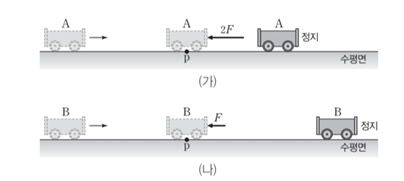
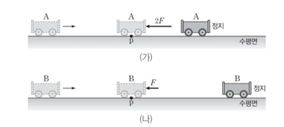

문제:
27. 그림은 수평면에 정지해 있는 질량이 2kg인 물체에 수평 방향으로 4N의 힘이 작용하여 물체가 4m 이동한 모습을 나타낸 것이다. (단, 물체의 크기, 마찰과 공기 저항은 무시한다.)
27-1. 물체가 4m 이동하였을 때 물체의 운동 에너지를 구하시오.
27-2. 물체가 4m 이동하였을 때 물체의 속력을 구하시오.
27. 그림은 수평면에 정지해 있는 질량이 2kg인 물체에 수평 방향으로 4N의 힘이 작용하여 물체가 4m 이동한 모습을 나타낸 것이다. (단, 물체의 크기, 마찰과 공기 저항은 무시한다.)
27-1. 물체가 4m 이동하였을 때 물체의 운동 에너지를 구하시오.
27-2. 물체가 4m 이동하였을 때 물체의 속력을 구하시오.